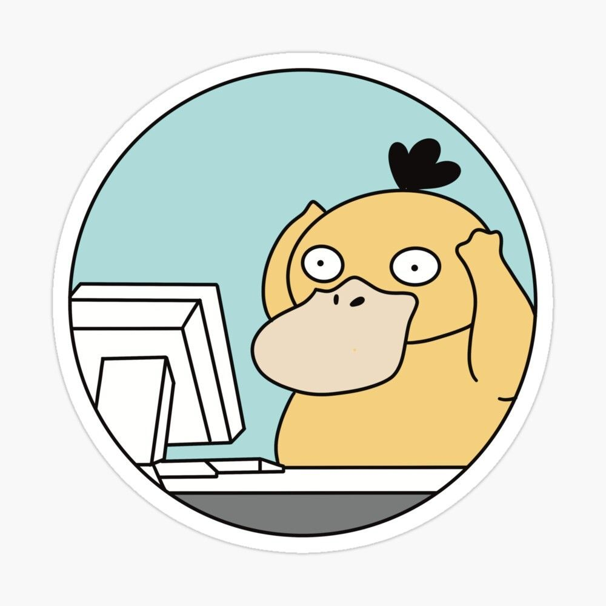

Julie Durand
Etudiante en BTS SIO (Specialisation SLAM)
Alternante chez Kyriba en tant qu'IT support niveau 3

Julie Durand
Etudiante en BTS SIO
IT Support N3 · KyribaA propos & Mon parcours
Etudiante en BTS SIO (Services Informatiques aux Organisations) specialisation SLAM a l'ecole IRIS, je combine des competences en developpement d'applications avec une solide maitrise des systemes et environnements OS.
Je realise mon alternance chez Kyriba, leader mondial des solutions logicielles cloud (SaaS) dediees a la gestion de tresorerie (TMS), aux paiements d'entreprise et a la connectivite bancaire securisee.
En tant qu'IT Support Niveau 3, j'interviens sur la maintenance et le deploiement du parc informatique (Windows, macOS), le support utilisateur avance, l'administration des identites et acces (IAM avec Okta) ainsi que le traitement des incidents techniques.
Competences Techniques
Decouvrez mes competences techniques
Support et mise a disposition des services informatiques
Windows 11 et 10
Maitrise de l'environnement Windows 11 et 10 : installation, configuration, maintenance et assistance utilisateur.
MacOS
Maitrise de l'environnement Apple : configuration systeme, gestion des mises a jour et assistance utilisateur sur MacBook et iMac.
JIRA
Utilisation de la plateforme pour la gestion de projets et le suivi des tickets (Ticketing). Suivi des workflows et resolution d'incidents.
NinjaOne
Gestion du parc informatique avec NinjaOne : supervision (RMM), gestion des terminaux, deploiement de scripts et assistance a distance.
Okta
Gestion des identites et des acces (IAM) avec Okta : authentification unique (SSO), securisation des connexions et gestion des utilisateurs.